Okapi Framework - TutorialsUsing ID-Based Alignment |
|
This tutorial illustrates how to use the ID-Based Alignment utility included in Rainbow.
This utility allows you to create a bilingual output from two monolingual input files. The synchronization between source and target text units is done based on the identifier of each text unit of the input files. Each entry in the input files must have an identifier.
In addition, you can specify segmentation rules to apply to the content of each text units. The utility then tries to align the segments within each text unit. If it fails, it prompts the user to fix the alignment or make the decision to skip this pair (source and target) of text units.
To complete this tutorial you must have Rainbow v6 installed and working. Note that for Rainbow to run properly you must also have Java 1.6 or later installed on you system.
You should also have a copy of the sample files for this tutorial on your machine, for example in
C:\Tmp\tutorials\turorial_01\files.
Start Rainbow.
To make sure you are starting this tutorial in a fresh environment, you should first create a new project: Select the command New in the File menu, or press Ctrl+N.
The filter parameters directory is the location where the filter parameters files for this project are located. The filter parameters files (.fprm) are configuration files you assign to the documents you process to indicate which filter to use.
Because you will use a specific parameters file in this example, you should
set this directory: Select the Other settings tab in the main
window. Set the option Use custom parameters folder, and enter the
directory where the tutorial files are, for example:
C:\Tmp\tutorials\tutorial_01\files.
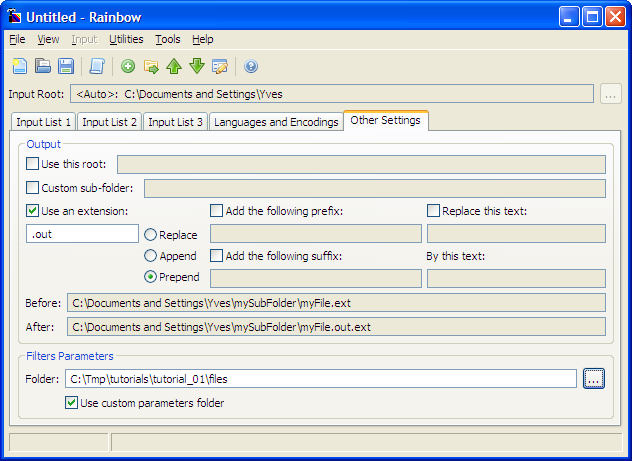
Select the Input List 1 tab. This is the list where we will enumerate all the source documents to align.
Select the command Edit Root in the Input menu, or press F2. This opens the Root for Input List 1 dialog box.
Enter the top-most directory where your input source documents are located. You can also select the directory using the browse button. Once you have entered the new input root directory, click OK to it and return to the main window.
Select the command Add Documents from the Input menu, or press Ctrl+Insert. This opens the Add Documents dialog box where you select the source documents you want to align. You can also simply drag and drop the documents on the list. All documents must be in or below the input root directory you have chosen for the source.
In this example we have one file: file1_en.info.
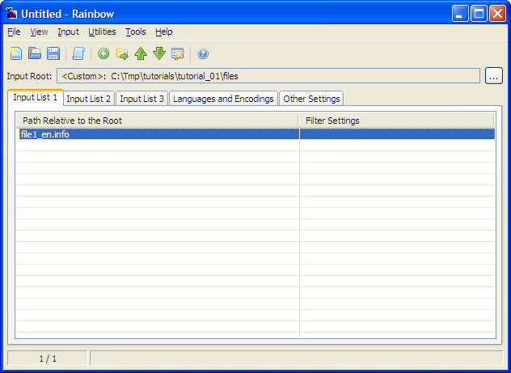
Now you need to associate each file to its filter. The filters are used to
parse the documents and separate the translatable text from the code parts of
the files. In this example, the files are in the StringInfo format. They can be
processed using the Regular Expression Filter (okf_regex), and there is a
parameters file defined for them: okf_regex@StringInfo.prm.
Select all the input documents in the Input List 1 tab, and then select the command Edit Document Properties in the Input menu, or press Alt+Enter, or Space. This opens the Input Document Properties dialog box.
In the top list, select "Regex Filter" (the Regular
Expression filter).
Then in the parameters list, select "okf_regex@StringInfo" (the
parameters file for StringInfo files) If you do not see this choice, it is
likely because you have not set the filters parameters directory properly.
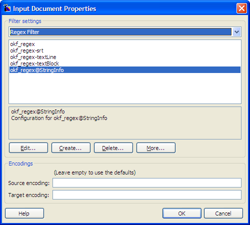
Click OK when you have selected the proper parameters.
Now you need to provide the input document for the target language, and associated them with their filter settings.
Select the Input List 2 tab. This is the list where we will enumerate all the target (translated) documents to align.
Select the command Edit Root in the Input menu, or press F2. This opens the Root for Input List 2 dialog box.
Enter the top-most directory where your input target documents are located. You can also select the directory using the browse button. Once you have entered the new input root directory, click OK to it and return to the main window.
Select the command Add Documents from the Input menu, or press Ctrl+Insert. This opens the Add Documents dialog box where you select the target documents you want to align. You can also simply drag and drop the documents on the list. All documents must be in or below the input root directory you have chosen for the target.
In this example we have one file: file1_de.info.
Once the files are listed, you need to associate them with their corresponding filter settings, just like for the source input:
Select all the input documents in the Input List 2 tab, and then select the command Edit Document Properties in the Input menu, or press Alt+Enter, or Space. This opens the Input Document Properties dialog box.
In the Filter list, select "okf_regex" (the Regular
Expression filter).
Then in the parameters list, select "okf_regex@StringInfo"
(the parameters file for stringInfo files).
Click OK. You should now see something like this screen:
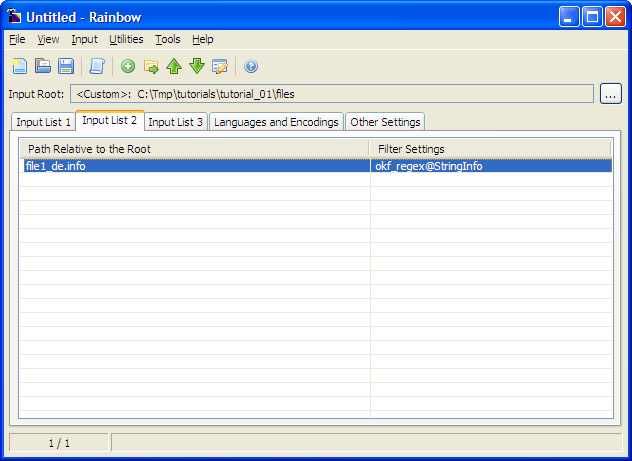
The next step is to make sure languages and default encodings are set properly. Select the Languages and Encodings tab.
Note: Locale and Languages. Nowadays there is not many difference between a language code and a locale code, as the new language tags of the BCP-47 includes sub-tags that represent various regional or special variants, as well as script difference. For example,
ES-005stands for Latin-America Spanish,zh-Hant-twfor Traditional Chinese used in Taiwan, etc. For more information about BCP-47 see http://www.w3.org/International/articles/bcp47. The terms locale and language are used interchangeably in Rainbow's interface.
You need to specify the language of the source and target documents, as well as the default encoding to use to read the documents in case they are not in a format where the encoding can be auto-detected.
In this example, the source language is English and the target language is German. And use UTF-8 for the source and target default encoding.
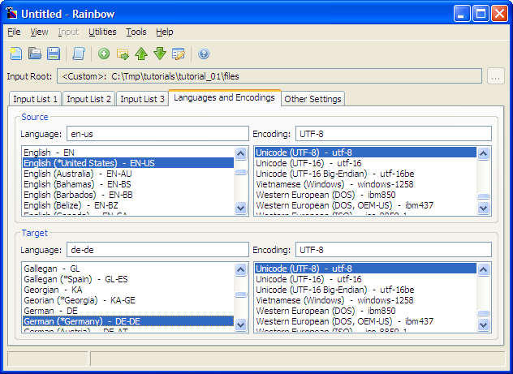
Now that you have you have set the main parameters for this process, it may be a good idea to save
this project, so you can easily retrieve it later on. To do this: Select
the Save command from the File menu, select a file
name (e.g. "tutorial_01.rnb") and click Save.
All the previous steps were performed to define general settings that are used with all Rainbow utilities. Now comes the part that is specific to the ID-Based Alignment utility.
Select the command ID-Based Alignment in the Utilities menu. This will bring up the dialog box where you set the options specific to the utility and launch it.
Set the option Segment the extracted text using the following
SRX rules. And enter the full path of the SRX document to use. In this
example the document is in the same directory as the input files and is called
StringInfo.srx. In this example, StringInfo.srx is
used for both source and target.
You can leave the other settings in the Options tab as they are.
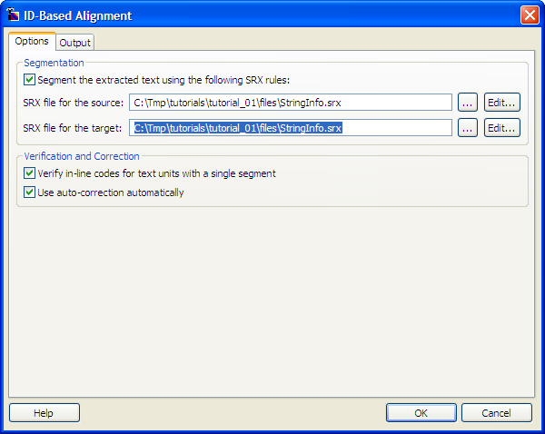
Select the Output tab.
Set the option Create a TMX document with the following path.
And enter a path for the output file, for example
C:\Tmp\tutorials\tutorial_01\files\Output.tmx.
Set the option Generate Trados workarounds. This
option is needed if you plan to open the TMX document in Trados Translator's
Workbench. Several versions of this program have a bug in their TMX import
mechanism that deletes some characters such as '{' and '\'
from valid TMX entries, if they are not coded in a non-TMX-compliant syntax.
Using this option will aloow you to import the TMX documents without data lost.
Set the option Exclude segments where the source text matches
this regular expression and enter the following expression in the provided field:
(([\uE101\uE102\uE103].)+)(([\d\p{Lu}]\.)|\u00B7|-)([\uE101\uE102\uE103].)
This option allows you to exclude from the TMX output any segment that matches the given expression. We use it here to exclude segments that are made of inline codes and bullet or numbers. They are not really translatable items and since there are many of them in our example files we want to exclude them.
Make sure the option Create a SimpleTM database is not set. We will not use this option in this tutorial.
Set the option Use the following attributes and enter the
following text:
Txt::FileName=${filename}
Txt::GroupName=${resname}
Att::Test=TestValue
The two first attributes will provide respectively the name of the input file and the ID of the text unit from where the segments are coming. The third attribute is just one used to illustrate that you can label each entry of the output TMX file with any flag or indicator you want.
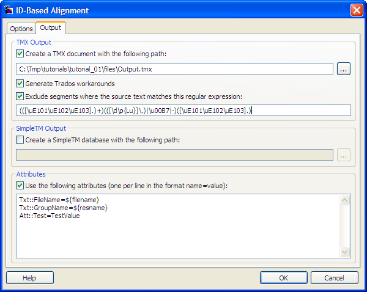
When all the options are set properly, click OK to start the alignment.
Once started, the utility will process each pair of input files, trying to align their content automatically. As soon as a potential alignment problem is detected, you are prompted to correct it.
The Alignment Verification dialog box looks like this:
Source #3 /
Targets: 7" means that you are aligning the third text unit of the
source, and that there are 7 text units in the target.['
and ']' characters.['
and ']' characters.You can leave the Alignment Verification dialog three different ways:
The previous screen shows one of the most common reasons for the utility to prompt the user for feedback: A mismatch in the number or the nature of inline codes has been detected. The alignment algorithm uses anchors points such as inline codes, number, and other special patterns to try to verify if the segments are aligned or not.
In this case there is one extra "\n" in the source segment. ("\n",
"\t", "#![PG...]" are set to be inline codes in this
format.). You can see more clearly what part of the segments are inline codes by
turning on the option Display in-line codes with generic markers.
In this occurence, this difference is not an issue the German text is simply formatted differently from the English one. You can accept this alignment as it. Click Accept to move to the next issue.
The next issue is a warning caused by the presence of the number 2 in the target that is not found in the source.
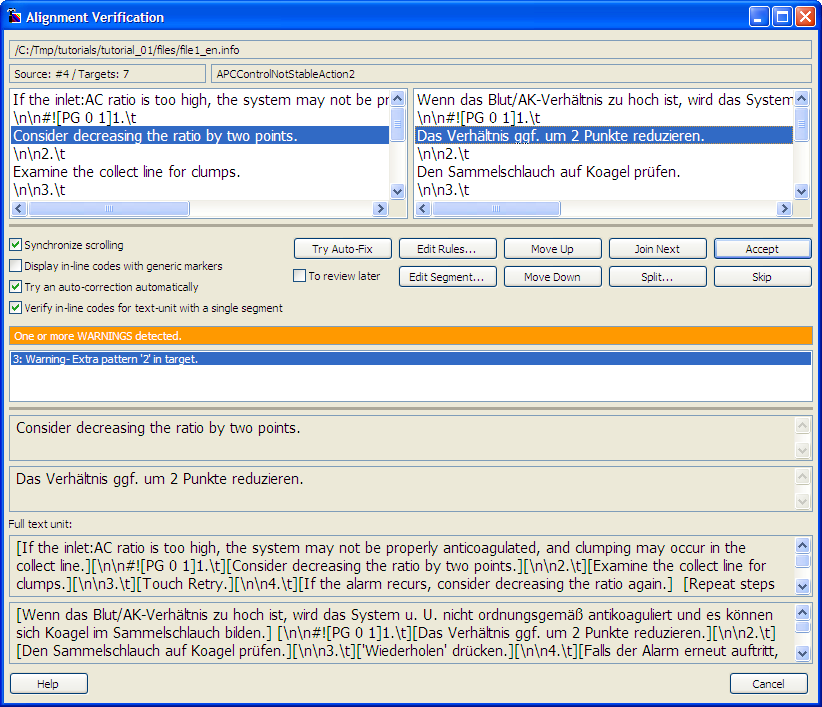
Upon closer examination it appears that the German sentence simply uses the digit instead of the text for the same thing. The alignment is fine. Click Accept to move to the next issue.
The next text unit has a warning indicating that an auto-correction has taken place for the first segment: the first target segment that is now displayed has been constructed by joining several consecutive segments. The utility was able to do this because The next segment is exactly the same in the source and the target, providing an easy reference point to synchronize the German.
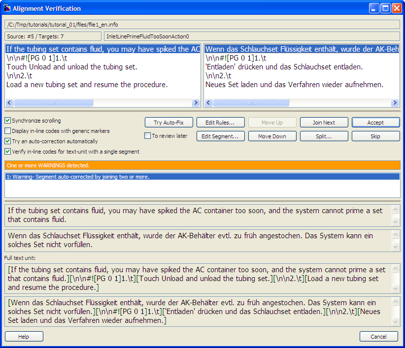
If you look closely at the first German segment you can see that it is made out of two full sentences, while the English is only one sentence. This alignment is correct, click Accept to move to the next issue.
The next issue is an error. The number of source (2) and target segments (3) is different. In this instance, the aligner was not able to perfom any auto-correction because there are no anchor segments available and it cannot guess safely which target segment should be merged with the next one to correspond to the English.
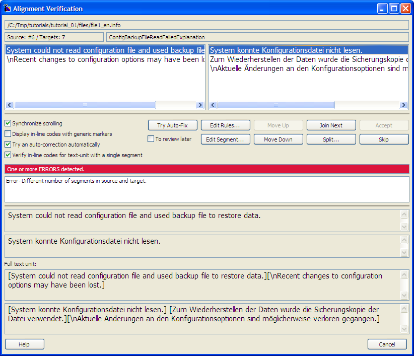
The problem is easy to fix here because there are only three target segments.
The presence of the "\n" and words with similarity like "Configuration
file" and "Konfigurationsdatei" allows even a non-German
speaker to guess the two first target segments corresponds to the first English
one.
To correct the problem: select the first target segment, and click Join Next. The warning is replaced by a notice that no issue has been automatically detected after your change. This does not guarantee that there is no error in the alignment, only that, to the best of the utility's knowledge no detectable signs of potential misalignment exist now. Note that we could have joined the second and third target segment and get the same green flag, while the alignment would have been incorrect.
Click Accept to move to the next issue.
The next issue shows that we have two source segments for a single target one. this is due to the German translation of two English sentences being grouped into one. This type of issue is one of the more difficult to resolve because it is often required to know the target language to be able to split the target segment at the proper position. This type of problem could be avoided at translation time by translating each source segment with one corresponding target segment.
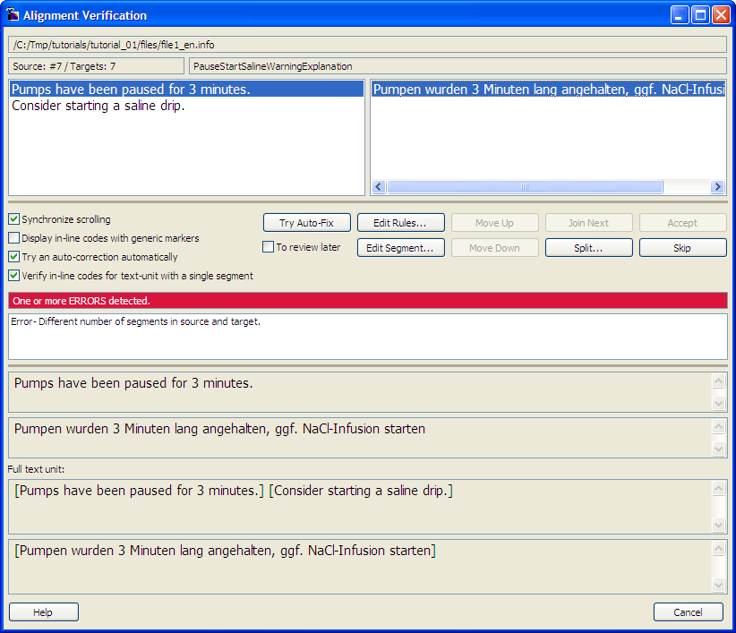
To split the target segment click the Split button. This puts the dialog box in edit split mode. The next step is to select where the split location should be by moving the cursor to the relevant position. You can also select part of the text, in which case the segment will be split into two new segments with the selected text not being included in either.
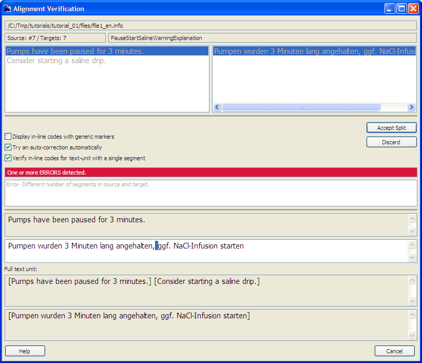
The comma in the German sentence gives a clue where the target should be
split. In addition the abbreviation "ggf." stands for "gegebenfalls"
meaning something like "if applicable", "if required"
which close to the overall meaning of "Consider". based on this, we
can make an educated guess that the split should probably be between the comma
and "ggf.".
Now if you look at the English, you will see that the space between the two
sentences is outside of the segments. We can do the same for the target, by
selecting the space between the comma and "ggf.". Click
Accept Split to make the split.
Note: Why can we not join the two source segments instead of splitting the target? The only language the utility will let you modify is the target, the reason for this is because the segmentation will drive the next translation process, and therefore when you prepare a new English document that contains this text unit, it will again be segmented into two English sentences based on the current rules. There is no point trying to create a TM that does not corresponds to the segmentation rules of the source language.
Our last correction has several potential issues:
Because of this, if the initial alignment is not done by a linguist, you may want to have the resulting TMX document reviewed by a linguist. To avoid reviewing every single segment, you can set a special flag for the text units that need attention.
Set the To review later check box to have a property named
Att::AlignStatus set to "TO-REVIEW" for all the segments of this
text unit..
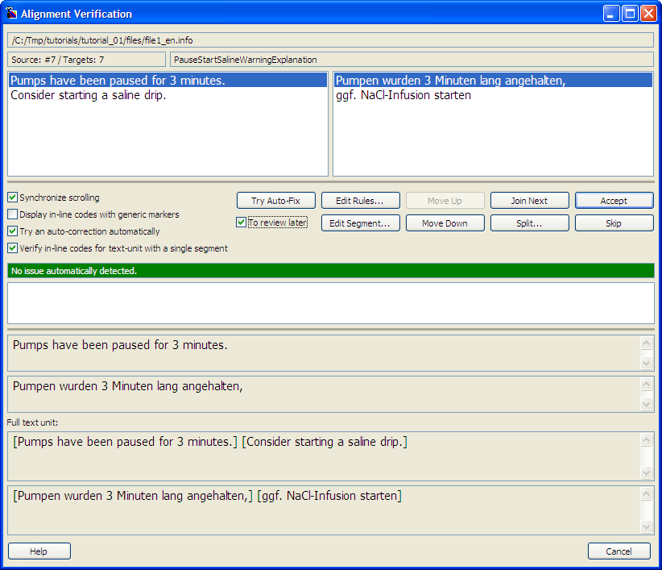
Click Accept to move on to the next issue.
This is the last entry with an issue in this tutorial, so the utility terminates and generates the TMX output document.
If an error occurs during the process Rainbow displays the Log windows. You can also press F9 or select Log in the View menu to open the log window manually. In the log you will see the total number of text units processed (7 in our example), how many were aligned (7 as well), and among that number how many were modified manually (2: one join, one split). Note that you were prompted for 5 text units, so two of the aligned text units were automatically generated.
You can open the TMX document generated:
C:\Tmp\tutorials\tutorial_01\files\Output.tmx.
Each segment is in a <tu> element. for example the last segment
you aligned looks like this:
<tu tuid="PauseStartSalineWarningExplanation_s02"> <prop type="Txt::FileName">file1_en.info</prop> <prop type="Txt::GroupName">PauseStartSalineWarningExplanation</prop> <prop type="Att::Test">TestValue</prop> <prop type="Att::AlignStatus">TO-REVIEW</prop> <tuv xml:lang="en-us"><seg>Consider starting a saline drip.</seg></tuv> <tuv xml:lang="de-de"><seg>ggf. NaCl-Infusion starten</seg></tuv> </tu>
The tuid attribute is a value made from the identifier of the
original text unit and a suffix "_sNN", where NN is
the segment number in this text unit. Note that not all segments that you saw
during the verification are listed in the TMX output: Segments like "\nC.\t"
in the text unit APCCalibrateTimeoutAction1 have been excluded from
the output because they match the pattern we have defined in the options.